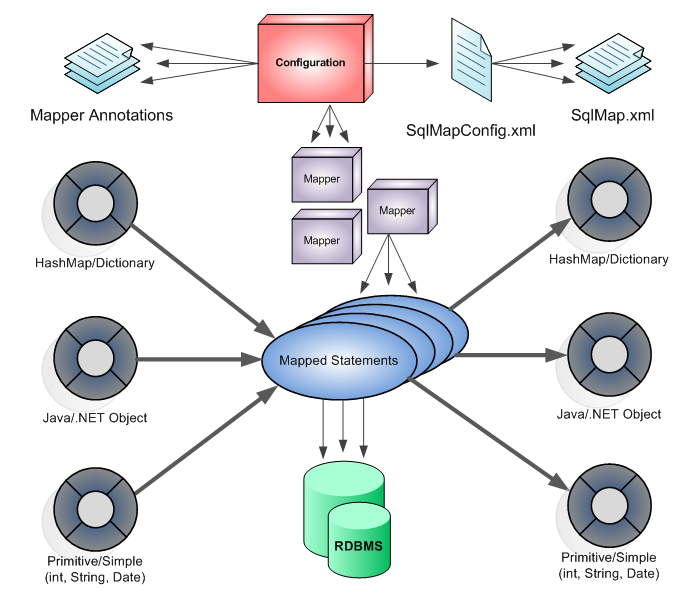

What is MyBatis?
MyBatis is a persistence framework that supports developer-specified SQL, stored procedures, and some advanced mapping.
MyBatis removes JDBC code and manually set parameters and result mappings.
MyBatis can use XML and annotations to set and map primitive types and Map interfaces and Java POJOs to database records.
In the way of programming using JDBC, SQL statements are written in the program source, but with MyBatis, SQL statements are separated from the program and separately written in XML files.
This reduces the burden of programmers to program when using existing JDBC. In addition, if the user wants to change the SQL, the user can change the SQL with no hassle because the user only needs to change the SQL statement in the XML file rather than modifying the program as before.
The following is an illustration of the structure of MyBatis.

Configuration file (SqlMapConfig.xml): Defines the rules that MyBatis works such as DB settings and transactions
Mapper: Refers to the mapper XML file that defines SQL in XML, and the mapper interface that defines SQL as an annotation for each method of the interface
Mapping Statements: Refers to the result mapping indicating the rules for setting search result to the Java object and the mapping statement defining SQL in XML.
There are two ways to define mapping statements: annotation and XML method.
When the user writes each SQL statement for CRUD in the SqlMap XML file and writes these files in the SqlMapConfig XML file, it creates statement mapped objects automatically through MyBatis API and executes SQL statement in DB through it. MyBatis is currently acquired by Google and the website is http://blog.mybatis.org/http://mybatis.github.io/mybatis-3/.
Downloading MyBatis
To use MyBatis, MyBatis related jar files are required. This jar file can be downloaded from http://repo1.maven.org/maven2/org/mybatis/mybatis/3.2.8/.
Download mybatis-3.2.8.jar and add it in eclipse. if using Maven, add the following statement to pom.xml.
<dependency>
<groupId>org.mybatis</groupId>
<artifactId>mybatis</artifactId>
<version>3.2.8</version>
</dependency>
How to add a library via Maven is explained in detail in Appendix 2.
{kind=link}